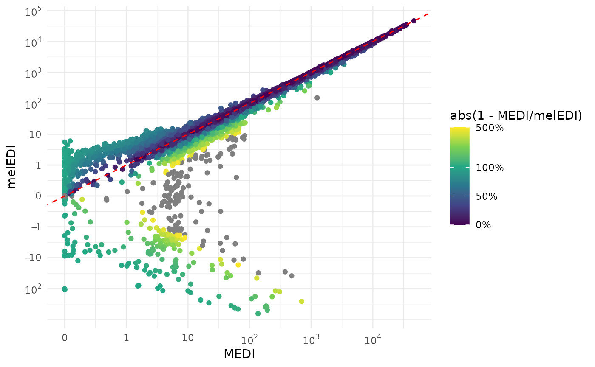
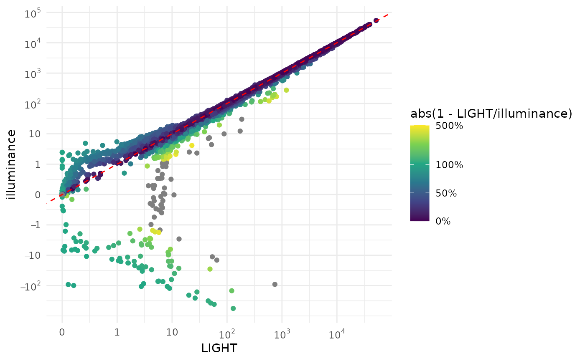

LightLogR focuses on wearable light exposure data,
recorded in the form of, e.g., illuminance. Some devices also provide
spectral information, that has to be preprocessed before being useful in
an analysis. The package has some packages to facilitate this, but the
user is expected to have some knowledge of spectral data and how to
handle it. This article will show how to use the LightLogR
package to process spectral data from the Actlumus device.
library(LightLogR)
library(tidyverse)
#> ── Attaching core tidyverse packages ──────────────────────── tidyverse 2.0.0 ──
#> ✔ dplyr 1.1.4 ✔ readr 2.1.5
#> ✔ forcats 1.0.0 ✔ stringr 1.5.1
#> ✔ ggplot2 3.5.2 ✔ tibble 3.3.0
#> ✔ lubridate 1.9.4 ✔ tidyr 1.3.1
#> ✔ purrr 1.0.4
#> ── Conflicts ────────────────────────────────────────── tidyverse_conflicts() ──
#> ✖ dplyr::filter() masks stats::filter()
#> ✖ dplyr::lag() masks stats::lag()
#> ℹ Use the conflicted package (<http://conflicted.r-lib.org/>) to force all conflicts to become errors
library(gt)Importing Data
We will use data imported and cleaned already in the article Import & Cleaning.
#this assumes the data is in the cleaned_data folder in the working directory
data <- readRDS("cleaned_data/ll_data.rds")As can be seen by using gg_overview(), the dataset
contains 17 ids with one weeks worth of data each, and one to three
participants per week.
data |> gg_overview()
Spectral power distributions
Some devices output a spectral power distribution, or SPD, directly.
At the time of writing, the nanoLambda device, and the
OcuWEAR are known to provide these data directly, at least
as an export option. This section can be skipped if a device outputs
SPDs directly.
Other devices do not provide this information directly, but have a
set of channels that can be used to reconstruct the SPD. At the time of
writing, the ActLumus and the VEET devices
belong to this group. Some form of spectral reconstruction is needed to
obtain an SPD from these devices. LightLogR provides one
function to derive SPDs from sensor channels using a calibration matrix.
**These matrices are not provided by LightLogR, but have to
be acquired from the manufacturer of the device, metrology institutions
tasked with device characterization, or the users own calibration
efforts*.
We are going to use a simple dataset from the Actlumus device. First
we load to the calibration matrix. LightLogR has a dummy
matrix for the ActLumus device, but in no way is it a
substitute for a real calibration matrix. The dummy matrix is only used
for testing purposes, and should not be used for real analysis without
checking back with the manufacturer.
The relevant column names are F1 to F8,
CLEAR, and IR.Light.
#Path to data in LightLogR
path <- system.file("extdata",
package = "LightLogR")
#Load the calibration matrix
calib_mtx <-
read_csv(paste(path, "ActLumus_dummy_calibration_matrix.csv", sep = "/"))
#> New names:
#> Rows: 9 Columns: 11
#> ── Column specification
#> ──────────────────────────────────────────────────────── Delimiter: "," dbl
#> (11): ...1, W1 (F1), W2 (F2), W3 (F3), W4 (F4), W5 (F5), W6 (F6), W7 (F7...
#> ℹ Use `spec()` to retrieve the full column specification for this data. ℹ
#> Specify the column types or set `show_col_types = FALSE` to quiet this message.
#> • `` -> `...1`
#rename the columns, so that the column names are in line with the actlumus data
calib_mtx <-
calib_mtx |>
rename_with( #collect the sensor channel names, which are inside of brackets
~ str_extract(., pattern = "(?<=\\()[^()]+(?=\\))"), .cols = -`...1`) |>
rename(wavelength = `...1`, #change the first column to wavelength
IR.LIGHT = IR) #rename the IR channel to its name in the dataset
#show a table of the matrix
calib_mtx |>
gt(caption = "Calibration matrix") |>
fmt_number(columns = -wavelength)| wavelength | F1 | F2 | F3 | F4 | F5 | F6 | F7 | F8 | CLEAR | IR.LIGHT |
|---|---|---|---|---|---|---|---|---|---|---|
| 415 | 0.42 | 0.02 | 0.01 | 0.01 | 0.01 | 0.03 | −0.03 | 0.06 | −0.04 | 0.00 |
| 445 | 0.11 | 0.25 | −0.02 | 0.05 | −0.03 | 0.06 | −0.03 | 0.05 | −0.04 | 0.00 |
| 480 | 0.02 | 0.02 | 0.17 | 0.04 | −0.02 | 0.05 | −0.03 | 0.06 | −0.04 | 0.00 |
| 515 | 0.01 | 0.02 | −0.01 | 0.17 | −0.04 | 0.04 | −0.01 | 0.02 | −0.02 | 0.00 |
| 555 | 0.01 | 0.02 | −0.02 | 0.05 | 0.08 | 0.03 | −0.02 | 0.04 | −0.03 | 0.00 |
| 590 | 0.01 | 0.01 | 0.01 | 0.02 | 0.02 | 0.10 | −0.02 | 0.03 | −0.02 | 0.00 |
| 630 | −0.01 | 0.00 | −0.02 | 0.03 | −0.06 | 0.05 | 0.05 | 0.00 | 0.00 | −0.01 |
| 680 | 0.03 | 0.00 | 0.07 | −0.01 | 0.07 | −0.03 | 0.01 | 0.08 | −0.03 | 0.01 |
| 750 | −0.03 | −0.02 | −0.03 | 0.06 | −0.15 | 0.09 | −0.05 | 0.01 | 0.04 | −0.02 |
#convert the matrix to an actual matrix
calib_mtx <-
calib_mtx |> column_to_rownames("wavelength") |> as.matrix()Next, we apply the spectral_reconstruction() function to
the dataset. The function takes the sensor channels and the calibration
matrix as input, and returns a tibble with the wavelength and irradiance
values. The function is vectorized, so it can be applied to multiple
rows at once.
Important note: spectral_reconstruction() takes
normalized sensor counts as inputs. The ActLumus device
provides these values in their sensor channels, but other devices may
not. E.g., the VEET device provides raw counts and a gain
value. These values have to be normalized first. See the documentation
for normalize_counts() to derive normalized counts based on
raw counts, gain values, and a gain table. The user has to check the
documentation of the device to find out which columns contain the
normalized sensor counts.
We start by demonstrating how the function works with a single observation.
data_aggregated <-
data|>
aggregate_Datetime(unit = "15 mins") #aggregate the data to 15 min intervals so as to reduce the amount of data
#collect a single row
single_obs <-
data |> ungroup() |> slice(10^5) |> select(F1:F8, CLEAR, IR.LIGHT)
#apply the function to the single observation
spectral_reconstruction(
sensor_channels = single_obs,
calibration_matrix = calib_mtx
) |> gt()| wavelength | irradiance |
|---|---|
| 415 | 0.0001272305 |
| 445 | 0.0001599880 |
| 480 | 0.0002112029 |
| 515 | 0.0002981474 |
| 555 | 0.0002838125 |
| 590 | 0.0002726840 |
| 630 | 0.0004778664 |
| 680 | 0.0002693977 |
| 750 | 0.0006490880 |
The SPD is rather short, because the calibration matrix only provides
9 wavelength rows. spectral_reconstruction() will output as
many wavelengths, as there are rows in the calibration matrix. Now we
add the Spectrum to the whole dataset. The function provides two ways to
do that. The “long” form creates a list column, while the “wide” form
adds new columns to the dataset. The “long” form is useful for plotting
and spectral integration metrics, while the “wide” form is useful for
easy “access” to individual wavelength values.
# demonstrating the wide form
data_aggregated <-
data_aggregated |>
dplyr::mutate(
Spectrum =
spectral_reconstruction(
#important to use dplyr::pick, as it expects a named vector or a
#dataframe (the latter of which pick provides)
dplyr::pick(F1:F8, CLEAR, IR.LIGHT),
calib_mtx,
format = "wide"
)
)
#show the first 3 observations
data_aggregated |>
select(Id, Datetime, Spectrum) |>
ungroup() |>
slice(2000:(2002)) |>
unnest(Spectrum) |>
gt() |>
fmt_scientific(decimals = 3)| Id | Datetime | 415 | 445 | 480 | 515 | 555 | 590 | 630 | 680 | 750 |
|---|---|---|---|---|---|---|---|---|---|---|
| 205 | 2023-08-31 19:00:00 | 5.104 × 10−3 | 6.158 × 10−3 | 6.615 × 10−3 | 7.310 × 10−3 | 6.475 × 10−3 | 6.074 × 10−3 | 6.710 × 10−3 | 5.456 × 10−3 | 7.032 × 10−3 |
| 205 | 2023-08-31 19:15:00 | 1.508 × 10−3 | 1.981 × 10−3 | 2.026 × 10−3 | 2.236 × 10−3 | 2.177 × 10−3 | 2.215 × 10−3 | 2.317 × 10−3 | 1.605 × 10−3 | 1.942 × 10−3 |
| 205 | 2023-08-31 19:30:00 | 4.106 × 10−5 | 2.942 × 10−4 | 2.586 × 10−4 | 4.301 × 10−4 | 6.234 × 10−4 | 8.531 × 10−4 | 8.365 × 10−4 | 2.173 × 10−4 | 3.659 × 10−4 |
We require the long form for the further tutorial
# long form
data_aggregated <-
data_aggregated|>
mutate(
Spectrum =
spectral_reconstruction(
#important to use dplyr::pick, as it expects a named vector or a
#dataframe (the latter of which pick provides)
pick(F1:F8, CLEAR, IR.LIGHT),
calib_mtx,
format = "long" #long is also the default
)
)
#show the first 3 observations
data_aggregated |>
ungroup() |>
select(Id, Datetime, Spectrum) |>
head(3)
#> # A tibble: 3 × 3
#> Id Datetime Spectrum
#> <fct> <dttm> <list>
#> 1 201 2023-08-15 00:00:00 <tibble [9 × 2]>
#> 2 201 2023-08-15 00:15:00 <tibble [9 × 2]>
#> 3 201 2023-08-15 00:30:00 <tibble [9 × 2]>Each list column contains the corresponding spectrum. We can plot the spectra for one day as an example.
data_1_day <-
data_aggregated |>
filter_Date(length = "1 day") |>
filter(Id == "201") |>
add_Time_col()
data_1_day |>
unnest(Spectrum) |> #unnest the list column
ggplot(aes(x=wavelength, y = irradiance, group = Datetime)) +
geom_path(aes(col = MEDI)) +
theme_minimal() +
labs(col = "mel EDI (lx)") +
scale_color_viridis_c(trans = "symlog", breaks = c(0, 10^(0:5)),
labels= expression(0,10^0,10^1, 10^2, 10^3, 10^4, 10^5))The plot shows the spectra for one day, with the color representing the mel EDI. Consequently, the more irradiance is in the spectrum, the higher the mel EDI. The plot is not very informative, as the spectra are all very similar, but it demonstrates that the derived spectra look plausible.
Calculating metrics
Integration
Once we have a spectrum, we can calculate various metrics from it.
This can be done manually, but LightLogR provides a handy
function: spectral_integration(). The function allows to
integrate over portions of a spectrum. E.g., if the short or long
wavelength range of a spectrum is of interest, it can easily be
calculated by it. If just the total irradiance is of interest, the whole
spectrum can be provided without any parameters. By setting a
wavelength_range, the function will integrate over the
specified range.
data_aggregated <-
data_aggregated |>
mutate(
Total_irradiance = Spectrum |> map_dbl(spectral_integration),
short_wl = Spectrum |> map_dbl(spectral_integration,
wavelength.range = c(300, 500)),
long_wl = Spectrum |> map_dbl(spectral_integration,
wavelength.range = c(600, 800)),
short_long_ratio = short_wl / long_wl
)Because the spectra are contained in a list column,
purrr::map_dbl() is used obtain a single result per
observation. What do the results look like?
#summarize spectral data per participant
data_aggregated |>
select(Id, Total_irradiance, short_wl, long_wl, short_long_ratio) |>
summarize_numeric() |>
head() |>
gt() |>
fmt_number()| Id | mean_Total_irradiance | mean_short_wl | mean_long_wl | mean_short_long_ratio | episodes |
|---|---|---|---|---|---|
| 201 | 2.72 | 0.49 | 0.89 | 0.82 | 577.00 |
| 202 | 0.97 | 0.18 | 0.32 | 0.06 | 577.00 |
| 204 | 6.52 | 1.13 | 2.28 | 0.46 | 577.00 |
| 205 | 3.40 | 0.61 | 1.16 | 0.46 | 577.00 |
| 206 | 0.30 | 0.05 | 0.11 | 0.40 | 577.00 |
| 208 | 1.10 | 0.17 | 0.39 | 0.61 | 577.00 |
In the “per participant” summary, we see the total irradiance, as well as the portions falling in the short and long wavelength ranges respectively. We also see, that the long wavelength range is always higher compared to the short one, which is expressed in the ratio.
Weighted integration
spectral_integration() also allows to calculate weigthed
integrations. Examples for weigthed integrations are illuminance
(weighed by the photopic action spectrum), melanopic EDI (weighed by the
melanopic action spectrum), and also the other alphaopic metrics. Any
spectrum can be provided to the function via the
action.spectrum argument (see the documentation for more
info). There are also a number of inbuilt spectra:
-
photopic: the photopic action spectrum -
melanopic: the melanopic action spectrum -
rhodopic: the rhodopic action spectrum -
l_cone_opic: the L-cone action spectrum -
m_cone_opic: the M-cone action spectrum -
s_cone_opic: the S-cone action spectrum
The basis for integration can be found in the dataset
alphaopic.action.spectra.
#show the action spectra
alphaopic.action.spectra |>
pivot_longer(cols = -wavelength) |>
drop_na() |>
ggplot(aes(x = wavelength, y = value)) +
geom_line(aes(col = name)) +
theme_minimal() +
labs(col = "Action spectrum") +
scale_color_manual(values = c("limegreen","darkred", "#1D63DC", "gold1",
"grey60", "darkviolet"))In the final step, we will calculate illuminance and melanopic EDI
from the Spectra and compare the derived values from the
ActLumus direct export. The function will return the value
in lx or mel EDI depending on the action
spectrum provided.
data_aggregated <-
data_aggregated |>
mutate(
illuminance = Spectrum |> map_dbl(spectral_integration,
action.spectrum = "photopic",
general.weight = "auto"),
melEDI = Spectrum |> map_dbl(spectral_integration,
action.spectrum = "melanopic",
general.weight = "auto")
)
data_aggregated |>
select(Id, Datetime, LIGHT, MEDI, illuminance, melEDI) |>
add_Time_col() |>
ggplot(aes(x=MEDI, y = melEDI)) +
geom_point(aes(col = abs(1- MEDI/melEDI))) +
geom_abline(slope = 1, intercept = 0, col = "red", linetype = 2) +
theme_minimal() +
scale_color_viridis_c(trans = "symlog",
limits = c(0, 5),
breaks = c(0, 0.5, 1, 5, 10),
labels = scales::label_percent())+
scale_x_continuous(trans = "symlog",
breaks = c(-1, 0, 10^(0:5)),
labels= expression(-1, 0, 1,10, 10^2, 10^3, 10^4, 10^5)
) +
scale_y_continuous(trans = "symlog",
breaks = c(-100, -10, -1, 0, 10^(0:5)),
labels= expression(-10^2, -10, -1, 0,1,10, 10^2, 10^3, 10^4, 10^5)
) 
data_aggregated |>
select(Id, Datetime, LIGHT, MEDI, illuminance, melEDI) |>
add_Time_col() |>
ggplot(aes(x=LIGHT, y = illuminance)) +
geom_point(aes(col = abs(1- LIGHT/illuminance))) +
geom_abline(slope = 1, intercept = 0, col = "red", linetype = 2) +
theme_minimal() +
scale_color_viridis_c(trans = "symlog",
limits = c(0, 5),
breaks = c(0, 0.5, 1, 5, 10),
labels = scales::label_percent())+
scale_x_continuous(trans = "symlog",
breaks = c(-1, 0, 10^(0:5)),
labels= expression(-1, 0, 1,10, 10^2, 10^3, 10^4, 10^5)
) +
scale_y_continuous(trans = "symlog",
breaks = c(-100, -10, -1, 0, 10^(0:5)),
labels= expression(-10^2, -10, -1, 0,1,10, 10^2, 10^3, 10^4, 10^5)
) 
Why are there such strong deviations between the wearable data and the reconstructed spectrum, especially in the lower regions of melanopic EDI? The three most likely reasons are:
The calibration matrix used for reconstruction here is not the same as used when recording the data
Another method for conversion was used
Other internal routines check for implausible values (such as negative values).
Indeed, ActLumus devices have their own calibration matrices for each
photopic and alphaopic quantity, which can explain the differences seen.
LightLogRs goal is not to reproduce every manufacturers
internal routines, but rather provide standardized pipelines for
analysis. Wearable devices are not laboratory-grade measurement devices,
and should not be treated as such. Thus, users can work with the derived
spectra, but should do so with care.